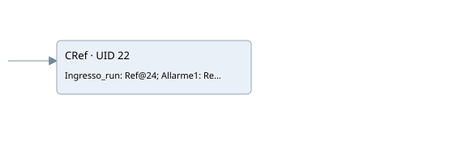

vr04
hmi · 검색 색인 순서 30 · 원본 내부 NID 추정 None
백업 PLF 원본의 2967715 바이트 위치에서 복원한 XML. 검색 문서 1207의 객체 키 16102200ae16000000000000와 연결했다. 이름 해석 0/8개. 남은 RefId는 상수 또는 미해석 참조다.
연결 구조 다시 그리기
원본 Part/PCon/Wire를 이용한 연결도다. TIA 화면의 래더 배치 또는 실행 결과를 재현한 그림은 아니다. 핀 연결은 아래 표와 원본 XML을 기준으로 읽는다. 노드 위에 마우스를 두면 피연산자 이름을 볼 수 있다.

접점·코일·블록과 피연산자
| Part UID | Gate | Negated 핀 | 연결 피연산자 |
|---|---|---|---|
| 22 | CRef | 호출 참조: RefId 638; Ingresso_run = RefId 661 / ORef UID 24; Allarme1 = RefId 358 / ORef UID 26; Allarme2 = RefId 48 / ORef UID 27; Allarme3 = RefId 48 / ORef UID 28; Allarme4 = RefId 48 / ORef UID 29; Allarme5 = RefId 48 / ORef UID 30; Risposta = RefId 359 / ORef UID 33; Comulativo_allarmi = RefId 361 / ORef UID 35 |
접점 경로를 펼친 조건식
Contact·O/A·비교기의 원본 연결을 읽기 쉽게 펼친 보조 해석이다. POWER는 전원 레일 시작을 뜻한다. 호출 블록·에지·타이머의 내부 동작과 다중 쓰기 순서는 이 표로 실행 검증하지 않았다. 미해석 핀과 RefId는 원문 연결표에서 확인한다.
| UID | 동작 | 대상 | 원본 접점 경로 | 내용 |
|---|
원본 배선 연결
| Wire UID | 동일 Wire 연결 끝점 |
|---|---|
| 21 | Powerrail {} ↔ Part 22.en |
| 37 | ORef 24 (RefId 661) ↔ Part 22.Ingresso_run |
| 39 | ORef 26 (RefId 358) ↔ Part 22.Allarme1 |
| 40 | ORef 27 (RefId 48) ↔ Part 22.Allarme2 |
| 41 | ORef 28 (RefId 48) ↔ Part 22.Allarme3 |
| 42 | ORef 29 (RefId 48) ↔ Part 22.Allarme4 |
| 43 | ORef 30 (RefId 48) ↔ Part 22.Allarme5 |
| 46 | Part 22.Risposta ↔ ORef 33 (RefId 359) |
| 48 | Part 22.Comulativo_allarmi ↔ ORef 35 (RefId 361) |
식별자 해석 근거 8개
| ORef UID | RefId | 이름 | IdentXmlPart 파일 | 해석 방법 |
|---|---|---|---|---|
| 24 | 661 | 미해석 RefId | 식별 선언 원본 참조 | 미해석 |
| 26 | 358 | 미해석 RefId | 식별 선언 원본 참조 | 미해석 |
| 27 | 48 | 미해석 RefId | 식별 선언 원본 참조 | 미해석 |
| 28 | 48 | 미해석 RefId | 식별 선언 원본 참조 | 미해석 |
| 29 | 48 | 미해석 RefId | 식별 선언 원본 참조 | 미해석 |
| 30 | 48 | 미해석 RefId | 식별 선언 원본 참조 | 미해석 |
| 33 | 359 | 미해석 RefId | 식별 선언 원본 참조 | 미해석 |
| 35 | 361 | 미해석 RefId | 식별 선언 원본 참조 | 미해석 |
검색 코드 보조 자료
참조 명칭을 찾기 위한 자료이며 실행 순서나 AND/OR 관계는 위 연결표로 확인한다.
"hmi standard motors" "inputs"."vr04 run" "allarm".vr_04_fault false false false false "motors".vr04.risposta "motors".vr04.allarme_comulativo